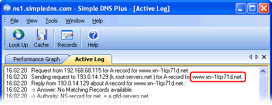
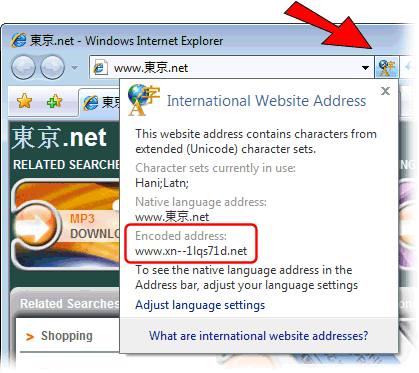
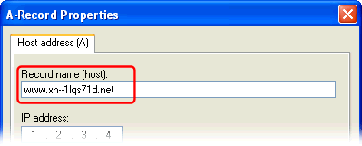
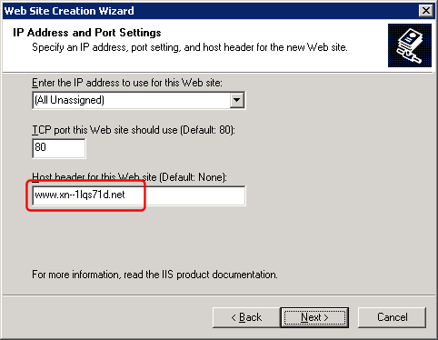

When you enter an IDN domain name in IE7 or Firefox, the browser will punycode-encode the domain name before sending it to the DNS server and web-server.
The encoded form of the domain name contains only english letters (A-Z), numbers (0-9) and hyphens
So the DNS server and the web-server will only see the encoded form of the IDN domain name.
For example a Japanese web address (the Japanese characters mean Tokyo) would be translated into www.xn--1lqs71d.net.
(Note: only those segments of the name which contain international characters are actually encoded - leaving 'www' and 'net' in their original form in the previous example)
For example, if you enter  in the IE7:
in the IE7:
Simple DNS Plus will receive a DNS request for www.xn--1lqs71d.net, and resolve this:

If you click on the IDN button in IE, you will notice that it shows the same encoded address:

If you are going to host DNS for this domain name in Simple DNS Plus:
In Simple DNS Plus v. 5.0, you can enter the IDN directly, and it is automatically converted behind the scenes:

In Simple DNS Plus v. 4.00 and ealier you must enter the encoded form:

And if you are hosting the web-site for the domain name, you must use the encoded form in the web-server configuration:


To convert your international domain name use our on-line IDN conversion Tool.
IMPORTANT: IDN domain names are only supported by the most recent browser versions (Microsoft Internet Explorer 7 / Firefox) and they are generally NOT yet supported by other applications such as e-mail clients.
So keep in mind that if your website visitor uses an older browser version, he will not be able to access your web-site with the IDN domain name.